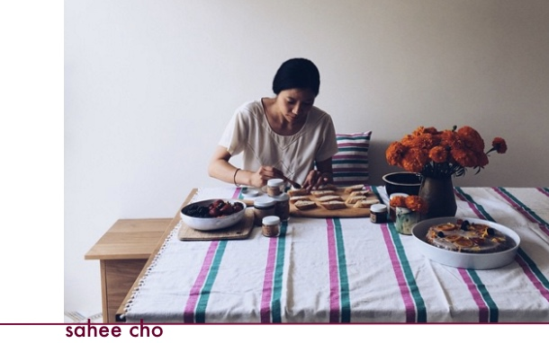

SOO N is a new food concept grounded in both seasonal carefullly curated menus and on-going artistic engaement with all things culinary.
With a background in fine arts and fashion, Sahee Cho conceptualizes food as a medium in the practice of art making and endeavors to make food that is as much about the process as it is about the plate.
Each dish tells a story and every ingredient is chosen with care and precision from farmers and vendors that contribute to a sense of community that SOO N regards as a fundamental principle.